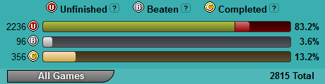

This is a simple website to show the highlights of my video game clearing adventures. I started keeping track of my game clears in 2021 and have been doing so ever since. I occasionally pick "themes" to work from to keep it interesting and encourage myself to try new things.
To be frank, I have way too many video games. As of 03/05/24, my Backloggery (a website for keeping track of these things) sits at 2815 games, and I know that's not entirely up to date. While I have no illusions that I'll ever play every single game I own, I wanted to cut into that backlog just a bit, and hopefully find some new favorites along the way.
I wish I knew. 🙂
More seriously, I blame Humble Bundle. When my options are "buy a Steam game I want for $15 on sale" or "buy a bundle with the same game plus 8 others for $10," I know which I'm picking. itch.io is another culprit, thanks to the "200+ games for $5" bundles they've done for charity over the years.